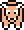
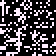
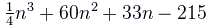

GlitchDex/RB:229
From Glitch City Wiki
(Redirected from C (0xE5))
Jump to navigationJump to search| C  | |
Front: With corruption and palette attribute data:  Raw, without corruption: Back:  | |
| Bulbapedia link | C (uppercase) |
| Equivalent glitch Pokémon | Z ゥ (Yellow) |
| Generation II equivalent | Aipom |
| Generation II Pokémon needed for Time Capsule exploit | Aipom |
| Name bytes | 41 82 50 0E 4B 00 0A 54 FA 4B 50 |
| Index number (hex) | E5 |
| Index number (dec) | 229 |
| Pokédex number (Family) |
245 |
| Pokédex marker byte | 0x00 |
| Pokédex flag (seen) | Bit 0x4 of item 6's identifier (+16) |
| Pokédex flag (own) | Seen Haunter |
| Type(s) | Glitch (0xA5)/Glitch (0x3B) |
| Category | (blank) |
| Height | 23'0 |
| Weight | 880.6lb |
| Palette attribute byte | |
| Catch rate constant | 0x6C |
| Experience group | 0xA5 </nowiki> Experience at Level 100: 853,085 Experience at Level 255: 8,055,043 |
| Experience yield | 0x60 |
| Sprite dimensions (base data) | 0x0 |
| Front sprite source pointer | 0x031D |
| Back sprite source pointer | 0x00A7 |
| Front sprite dimensions (actual) | 5x14 |
| Back sprite dimensions (actual) | 11x8 |
| ← Previous glitch Pokémon | Current glitch Pokémon | Next glitch Pokémon → |
|---|---|---|
| Glitch Pokémon (E4) | C (E5) | - - (E6) |
C is a dual-type Glitch (0xA5)/Glitch (0x3B)-type glitch Pokémon in Pokémon Red and Blue.
Its family number is 245.
It has an unstable front-sprite, which may cause this glitch Pokémon to freeze the game when sent out on the opponent's side.
When sound bank fixes are applied, its behavior is identical to 4 4, but it crashes after it partially shows up.
Z ゥ is the equivalent trade glitch Pokémon in Pokémon Yellow.
It cannot be encountered directly with the Trainer escape glitch or another means of instant encounter, as a Giovanni battle will be initiated instead.
Contents
Methods to obtain
- Party remaining HP glitch or storage box remaining HP glitch with a remaining HP of 229.
- Time Capsule exploit (Aipom).
- CoolTrainer♀ corruption ('m character).
- LOL glitch ('m tile)
- International fossil conversion glitch with an Attack stat of 229.
- Double distort CoolTrainer♀ corruption ('m character, normally cannot be input)
- Equivalent trade of Z ゥ from Pokémon Yellow.
- Arbitrary code execution
Starting moves
- Fly
- Rock Slide
- Glitch Move 0x00
- Gust
Evolution(s)
 ◣ゥ 8 (C9) |
Level 28 via evolve without stone glitch with DROWZEE → |
C (E5) |
Pokédex data
Level-up moves
- TM34 (Level 7)
- Tackle (Level 8)
- Gust (Level 14)
- TM08 (Level 15)
- TM50 (Level 16)
- Razor Wind (Level 19)
- TM16 (Level 20)
- Pay Day (Level 24)
- Hydro Pump (Level 31)
- TM17 (Level 32)
- Peck (Level 33)
- Razor Wind (Level 34)
- Mega Punch (Level 35)
- Poison Sting (Level 40)
- Fury Attack (Level 41)
- Whirlwind (Level 42)
- Reflect (Level 44)
- Transform (Level 48)
- TM24 (Level 60)
- TM40 (Level 103)
- TM40 (Level 111)
- Bite (Level 114)
- Bite (Level 115)
- TM24 (Level 124)
- TM24 (Level 125)
- Cut (Level 126)
- TM08 (Level 133)
- Swords Dance (Level 145)
- HM05 (Level 167)
- TM24 (Level 175)
- Bone Club (Level 191)
- Defense Curl (Level 192)
- Absorb (Level 198)
- Sludge (Level 199)
- Screech (Level 200)
- Defense Curl (Level 201)
- Absorb (Level 203)
- Sludge (Level 204)
- Screech (Level 205)
- Defense Curl (Level 206)
- Reflect (Level 209)
- TM54 (Level 216)
- Glitch Move 0xC0 (Level 224)
- Comet Punch (Level 230)
- TM04 (Level 240)
- Glitch Move 0x00 (Level 248)
- TM40 (Level 249)
- Slam (Level 254)
TM/HM moves
- TM03 Swords Dance
- TM05 Mega Kick
- TM07 Horn Drill
- TM21 Mega Drain
- TM27 Fissure
- TM30 Teleport
- TM35 Metronome
- TM38 Fire Blast
- TM43 Sky Attack
- TM46 Psywave
Base stats
| Base stats | Level 50 stat range | Level 100 stat range |
|---|---|---|
| HP: 21 | 81-127 | 152-245 |
| Attack: 33 | 38-84 | 71-164 |
| Defense: 176 | 181-227 | 357-450 |
| Speed: 0 | 5-51 | 5-98 |
| Special: 19 | 24-70 | 43-136 |
Time Capsule exploit moves
- Time Capsule exploit level-up moves: Scratch, Tail Whip, Sand Attack, Fury Swipes, Swift, Screech, Agility
- Time Capsule exploit TM/HM: Headbutt, Toxic, Thunder, Double Team, Ice Punch, Swift, Defense Curl, ThunderPunch, Dream Eater, Rest, Fire Punch, Cut, Strength
- Time Capsule move tutor: Thunderbolt
- Time Capsule breeding: Agility, Counter, DoubleSlap, Slam
- Time Capsule events: Mimic (New York Pokémon Center)
Categories:
- Glitch Pokémon which evolve
- GlitchDex articles
- Pokémon Red and Blue glitch Pokémon
- Generation I glitch Pokémon
- Glitch Pokémon
- Family 245 glitch Pokémon
- Glitch Pokémon which learn a glitch move 0xA6-0xC3
- Glitch Pokémon which learn a TM/HM glitch move
- Glitch Pokémon which learn glitch move 0x00
- Glitch Pokémon which learn a glitch move
- Glitch Pokémon part of Red/Blue experience group 0xA5
- Freeze sprite glitch Pokémon
- Freeze sprite glitch Pokémon in Pokémon Red and Blue
- Red/Blue glitch (0xA5)-type glitch Pokémon
- Red/Blue glitch (0x3B)-type glitch Pokémon
- Glitch Pokémon which affect item identifiers
- Glitch Pokémon with zero dimension sprites